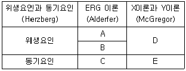
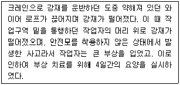
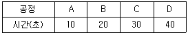

인간공학기사 (2017-03-05 기출문제)
1과목: 인간공학개론
1. 고령자를 위한 정보 설계 원칙으로 볼 수 없는 것은?
- 불필요한 이중 과업을 줄인다.
- 학습 및 적응 시간을 늘려 준다.
- 신호의 강도와 크기를 보다 강하게 한다.
- 가능한 세밀한 묘사와 상세 정보를 제공한다.
(정답률: 80%)

2. 제어-반응 비율(C/R ratio)에 관한 설명으로 틀린 것은?
- C/R비가 증가하면 제어시간도 증가한다.
- C/R비가 작으면(낮으면) 민감한 장치이다.
- C/R비가 감소함에 따라 이동시간은 감소한다.
- C/R비는 제어장치의 이동거리를 표시장치의 이동거리로 나눈 값이다.
(정답률: 57%)
3. 양립성의 종류가 아닌 것은?
- 주의 양립성
- 공간 양립성
- 운동 양립성
- 개념 양립성
(정답률: 86%)
4. 시각 표시장치보다 청각 표시장치를 사용하는 것이 유리한 경우는?
- 소음이 많은 경우
- 전하려는 정보가 복잡할 경우
- 즉각적인 행동이 요구되는 경우
- 전하려는 정보를 다시 확인해야 하는 경우
(정답률: 94%)
5. 동전던지기에서 앞면이 나올 확률은 0.4이고, 뒷면이 나올 확률은 0.6이다. 이때 앞면이 나올 정보량은 1.32bit이고, 뒷면이 나올 정보량은 0.67bit이다. 총평균 정보량은 약 얼마인가?
- 0.65bit
- 0.88bit
- 0.93bit
- 1.99bit
(정답률: 59%)
6. 부품 배치의 원칙에 해당되지 않는 것은?
- 사용 빈도의 원칙
- 사용 순서의 원칙
- 기능별 배치의 원칙
- 크기별 배치의 원칙
(정답률: 90%)
7. 인간-기계 시스템 중 폐회로(closed loop) 시스템에 속하는 것은?
- 소총
- 모니터
- 전자레인지
- 자동차
(정답률: 71%)
8. 반응시간이 가장 빠른 감각은?
- 청각
- 미각
- 시각
- 후각
(정답률: 92%)
9. 음원의 위치 추정을 위한 암시 신호(cue)에 해당되는 것은?
- 위상차
- 음색차
- 주기차
- 주파수차
(정답률: 76%)
10. 비행기에서 20m 떨어진 거리에서 측정한 엔진의 소음이 130dB(A)이었다면, 100m 떨어진 위치에서의 소음수준은 약 얼마인가?
- 113.5dB(A)
- 116.0dB(A)
- 121.8dB(A)
- 130.0dB(A)
(정답률: 68%)
11. 시스템의 사용성 검증 시 고려되어야할 변인이 아닌 것은?
- 경제성
- 에러 빈도
- 효율성
- 기억용이성
(정답률: 79%)
12. Fitts의 법칙에 관한 설명으로 맞는 것은?
- 표적과 이동거리는 작업의 난이도와 소요 이동시간과 무관하다.
- 표적이 작을수록, 이동거리가 길수록 작업의 난이도와 소요 이동시간이 증가한다.
- 표적이 클수록, 이동거리가 길수록 작업의 난이도와 소요 이동시간이 증가한다.
- 표적이 작을수록, 이동거리가 짧을수록 작업의 난이도와 소요 이동시간이 증가한다.
(정답률: 91%)
13. 코드화(coding) 시스템 사용산의 일반적 지침으로 적합하지 않은 것은?
- 양립성이 준수되어야 한다.
- 차원의 수를 최소화해야 한다.
- 자극은 검출이 가능하여야 한다.
- 다른 코드표시와 구별되어야 한다.
(정답률: 82%)
14. 움직이는 몸의 동작을 측정한 인체치수를 무엇이라고 하는가?
- 조절 치수
- 구조적 인체치수
- 파악한계 치수
- 기능적 인체치수
(정답률: 90%)
15. 인간기계 통합체계에서 인간 또는 기계에 의해 수행되는 기본 기능이 아닌 것은?
- 정보처리
- 정보생성
- 의사결정
- 정보보관
(정답률: 80%)
16. 인간의 눈에 관한 설명으로 맞는 것은?
- 간상세포는 황반(fovea) 중심에 밀집되어 있다.
- 망막의 간상세포(rod)는 색의 식별에 사용된다.
- 시각(視角)은 물체와 눈 사이의 거리에 반비례한다.
- 원시는 수정체가 두꺼워져 먼 물체의 상이 망막 앞에 맺히는 현상을 말한다.
(정답률: 67%)
17. 시(視)감각 체계에 관한 설명으로 틀린 것은?
- 동공은 조도가 낮을 때는 많은 빛을 통과시키기 위해 확대된다.
- 1디옵터는 1미터 거리에 있는 물체를 보기 위해 요구되는 조절능력이다.
- 안구의 수정체는 모양체근으로 긴장을 하면 얇아져 가까운 물체만 볼 수 있다.
- 망막의 표면에는 빛을 감지하는 광수용기인 원추체와 간상체가 분포되어 있다.
(정답률: 77%)
18. 인간의 정보처리과정, 기억의 능력과 한계 등에 관한 정보를 고려한 설계와 가장 관계가 깊은 것은?
- 제품 중심의 설계
- 기능 중심의 설계
- 신체 특성을 고려한 설계
- 인지 특성을 고려한 설계
(정답률: 88%)
19. 인체 측정 자료를 설계에 응용할 때, 고려할 사항이 아닌 것은?
- 고정치 설계
- 조절식 설계
- 평균치 설계
- 극단치 설계
(정답률: 81%)
20. 인간공학에 관한 설명으로 틀린 것은?
- 인간의 특성 및 한계를 고려한다.
- 인간을 기계와 작업에 맞추는 학문이다.
- 인간 활동의 최적화를 연구하는 학문이다.
- 편리성, 안정성, 효율성을 제고하는 학문이다.
(정답률: 93%)
2과목: 작업생리학
21. 작업강도의 증가에 따른 순환기 반응의 변화에 대한 설명으로 틀린 것은?
- 혈압의 상승
- 적혈구의 감소
- 심박출량의 증가
- 혈액의 수송량 증가
(정답률: 90%)
22. 관절에 대한 설명으로 틀린 것은?
- 연골관절은 견관절과 같이 운동하는 것이 가장 자유롭다.
- 섬유질관절은 두개골의 봉합선과 같으며 움직임이 없다.
- 경첩관절은 손가락과 같이 한쪽 방향으로만 굴곡 운동을 한다.
- 활액관절은 대부분의 관절이 이에 해당하며, 자유로이 움직일 수 있다.
(정답률: 45%)
23. 유산소(aerobic) 대사과정으로 인한 부산물이 아닌 것은?
- 젖산
- CO2
- H2O
- 에너지
(정답률: 74%)
24. 광도비(luminance ratio)란 주된 장소와 주변 광도의 비이다. 사무실 및 산업 상황에서의 추천 관도비는 얼마인가?
- 1 : 1
- 2 : 1
- 3 : 1
- 4 : 1
(정답률: 77%)
25. 반사 휘광의 처리 방법으로 적절하지 않은 것은?
- 간접 조명 수준을 높인다.
- 무광택 도료 등을 사용한다.
- 창문에 차양 등을 사용한다.
- 휘광원 주위를 밝게 하여 광도비를 줄인다.
(정답률: 74%)
26. 심장의 1회 박출량이 70mL이고, 1분간의 심박수가 70이면 분당 심박출량은?
- 70mL/min
- 140mL/min
- 4200 mL/min
- 4900mL/min
(정답률: 75%)
27. 총작업시간이 5시간, 작업 중 평균 에너지소비량이 7kcal/min이었다. 휴식 중 에너지소비량이 1.5kcal/min일 때 총작업시간에 포함되어야 할 필요한 휴식시간은 얼마인가? (단, Murrell의 산정방법을 적용한다.)
- 약 84분
- 약 96분
- 약 109분
- 약 192분
(정답률: 58%)
28. 신경계 가운데 반사와 통합의 기능적 특징을 갖는 것은?
- 중추신경계
- 운동신경계
- 교감신경계
- 감각신경계
(정답률: 75%)
29. RMR(relative metabolic rate)의 값이 1.8로 계산되었다면 작업강도의 수준은?
- 아주 가볍다(very light)
- 가볍다(light)
- 보통이다(moderate)
- 아주 무겁다(very heavy)
(정답률: 65%)
30. 힘에 대한 설명으로 틀린 것은?
- 힘은 백터량이다.
- 힘의 단위는 N이다.
- 힘은 질량에 비례한다.
- 힘은 속도에 비례한다.
(정답률: 60%)
31. 작업환경측정결과 청력보존프로그램을 수립하여 시행하여야 하는 기준이 되는 소음수준은?
- 80dB 초과
- 85dB 초과
- 90dB 초과
- 95dB 초과
(정답률: 56%)
32. 국소진동을 일으키는 진동원은 무엇인가?
- 크레인
- 버스
- 지게차
- 자동식 톱
(정답률: 89%)
33. 소음에 대한 대책으로 가장 효과적이고, 적극적인 방법은?
- 칸막이 설치
- 소음원의 제거
- 보호구 착용
- 소음원의 격리
(정답률: 92%)
34. 중량물을 운반하는 작업에서 발생하는 생리적 반응으로 맞는 것은?
- 혈압이 감소한다.
- 심박수가 감소한다.
- 혈류량이 재분배된다.
- 산소소비량이 감소한다.
(정답률: 84%)
35. 근육에 관한 설명으로 틀린 것은?
- 근섬유의 수축단위는 근원섬유이다.
- 근섬유가 수축하면 A대가 짧아진다.
- 하나의 근육은 수많은 근섬유로 이루어져 있다.
- 근육의 수축은 근육의 길이가 단축되는 것이다.
(정답률: 65%)
36. 점멸융합주파수(flicker fusion frequency)에 관한 설명으로 맞는 것은?
- 중추신경계의 정신피로의 척도로 사용된다.
- 작업시간이 경과할수록 점멸융합주파수는 높아진다.
- 쉬고 있을 때 점멸융합주파수는 대략 10~20Hz이다.
- 마음이 긴장되었을 때나 머리가 맑을 때의 점멸융합주파수는 낮아진다.
(정답률: 68%)
37. 산소소비량에 관한 설명으로 틀린 것은?
- 산소소비량과 심박수 사이에는 밀접한 관련이 있다.
- 산소소비량은 에너지 소비와 직접적인 관련이 있다.
- 산소소비량은 단위 시간당 흡기량만 측정한 것이다.
- 심박수와 산소소비량 사이의 관계는 개인에 따라 차이가 있다.
(정답률: 92%)
38. 열교환의 네 가지 방법이 아닌 것은?
- 복사(radiation)
- 대류(convection)
- 증발(evaporation)
- 대사(metabolism)
(정답률: 75%)
39. 컴퓨터 단말기(VDT) 작업의 사무환경을 위한 추천 조명은 얼마인가?
- 100 ~ 300 lux
- 300 ~ 500 lux
- 500 ~ 700 lux
- 700 ~ 900 lux
(정답률: 75%)
40. 근육운동 중 근육의 길이가 일정한 상태에서 힘을 발휘하는 운동을 나타내는 것은?
- 등척성 운동
- 등장성 운동
- 등속성 운동
- 단축성 운동
(정답률: 86%)
3과목: 산업심리학 및 관계법규
41. 인간의 의식수준을 단계별로 분류할 때, 에러 발생 가능성이 낮은 것으로부터 높아지는 순서대로 연결된 것은?
- Ⅰ단계 - Ⅱ단계 - Ⅲ단계 - Ⅳ단계
- Ⅰ단계 - Ⅳ단계 - Ⅲ단계 - Ⅱ단계
- Ⅱ단계 - Ⅰ단계 - Ⅳ단계 - Ⅲ단계
- Ⅲ단계 - Ⅱ단계 - Ⅰ단계 - Ⅳ단계
(정답률: 79%)
42. 제조물 책임법에서 손해배상 책임에 대한 설명 중 틀린 것은?
- 물질적 손해뿐 아니라 정신적 손해도 손해 배상 대상에 포함된다.
- 피해자가 손해배상 청구를 하기 위해서는 제조자의 고의 또는 과실을 입증해야 한다.
- 해당 제조물 결함에 의해 발생한 손해가 그 제조물 자체만에 그치는 경우에는 제조물 책임 대상에서 제외한다.
- 제조자가 결함 제조물로 인하여 생명, 신체 또는 재산상의 손해를 입은 자에게 손해를 배상할 책임을 의미한다.
(정답률: 78%)
43. 리더십이론 중 특성이론에 기초하여 성공적인 리더의 특성에 대한 기술로 틀린 것은?
- 강한 출세욕구를 지닌다.
- 미래보다는 현실지향적이다.
- 부모로부터 정서적 독립을 원한다.
- 상사에 대한 강한 동일 의식과 부하직원에 대한 관심이 많다.
(정답률: 52%)
44. 스트레스에 대한 설명으로 틀린 것은?
- 직무속도는 신체적, 정신적 스트레스에 영향을 미치지 않는다.
- 역할 과소는 권태, 단조로움, 신체적 피로, 정신적 피로 등을 유발할 수 있다.
- 일반적으로 내적 통제자들은 외적 통제자들보다 스트레스를 적게 받는다.
- A형 성격을 가진 사람이 B형 성격을 가진 사람보다 높은 스트레스를 받을 가능성이 있다.
(정답률: 74%)
45. 휴먼 에러의 배후요인 4가지(4M)에 속하지 않는 것은?
- Man
- Machine
- Motive
- Management
(정답률: 88%)
46. 다음 표는 동기부여와 관련된 이론의 상호 관련성을 서로 비교해 놓은 것이다. A~E에 해당하는 용어가 맞는 것은?

- A : 존재욕구, B : 관계욕구, D : X이론
- A : 관계욕구, C : 성장욕구, D : Y이론
- A : 존재욕구, C : 관계욕구, E : Y이론
- B : 성장욕구, C : 존재욕구, E : X이론
(정답률: 69%)
47. 안전에 대한 책임과 권한이 라인 관리감독자에게도 부여되며, 대규모 사업장에 적합한 조직 형태는?
- 라인형(Line) 조직
- 스탭형(Staff) 조직
- 라인-스탭형(Line-Staff) 조직
- 프로젝트(Project Team Work) 조직
(정답률: 86%)
48. 군중보다 한층 합의성이 없고, 감정에 의해 행동하는 집단행동은?
- 모브(mob)
- 유행(fashion)
- 패닉(panic)
- 풍습(folkway)
(정답률: 79%)
49. 다음과 같은 재해발생 시 재해조사분석 및 사후처리에 대한 내용으로 틀린 것은?

- 재해 발생형태는 추락이다.
- 재해의 기인물은 크레인이고, 가해물은 강재이다.
- 산업재해조사표를 작성하여 관할 지방고용노동청장에게 제출하여야 한다.
- 불안전한 상태는 약해진 와이어 로프이고, 불안전한 행동은 안전모 미착용과 위험구역 접근이다.
(정답률: 86%)
50. 반응시간 또는 동작시간에 관한 설명으로 틀린 것은?
- 단순반응시간은 하나의 특정자극에 대하여 반응하는데 소요되는 시간을 의미한다.
- 선택반응시간은 일반적으로 자극과 반응의 수가 증가할수록 로그함수로 증가한다.
- 동작시간은 신호에 따라 손을 움직여 동작을 실제로 실행하는데 걸리는 시간을 의미한다.
- 선택반응시간은 여러 가지의 자극이 주어지고, 모든 자극에 대하여 모두 반응하는데까지의 총소요시간을 의미한다.
(정답률: 61%)
51. 하인리히(Heinrich)가 제시한 재해발생 과정의 도미노 이론 5단계에 해당하지 않는 것은?
- 사고
- 기본원인
- 개인적 결함
- 불안전한 행동 및 불안전한 상태
(정답률: 81%)
52. 어느 사업장의 도수율은 40이고 강도율은 4이다. 이사업장의 재해 1건당 근로손실일수는 얼마인가?
- 1
- 10
- 50
- 100
(정답률: 60%)
53. 스트레스에 관한 일반적 설명 중 거리가 가장 먼 것은?
- 스트레스는 근골격계 질환에 영향을 줄 수 있다.
- 스트레스를 받게 되면 자율 신경계가 활성화 된다.
- 스트레스가 낮아질수록 업무의 성과는 높아진다.
- A형 성격의 소유자는 스트레스에 더 노출되기 쉽다.
(정답률: 69%)
54. 시스템 안전 분석기법 중 정량적 분석 방법이 아닌 것은?
- 결함나무 분석(FTA)
- 사상나무 분석(ETA)
- 고장모드 및 영향분석(FMEA)
- 휴먼 에러율 예측기법(THERP)
(정답률: 59%)
55. 조직이 리더에게 부어하는 권한의 유형으로 볼 수 없는 것은?
- 보상적 권한
- 강압적 권한
- 합법적 권한
- 작위적 권한
(정답률: 73%)
56. 호손 실험결과 생산성 향상에 영향을 주는 주요인은 무엇이라고 나타났는가?
- 자본
- 물류관리
- 인간관계
- 생산기술
(정답률: 87%)
57. Rasmussen의 인간행동 분류에 기초한 인간 오류가 아닌 것은?
- 규칙에 기초한 행동(rule-based behavior)오류
- 실행에 기초한 행동(commission-based behavior)오류
- 기능에 기초한 행동(skill-based behavior)오류
- 지식에 기초한 행동(knowledge-based behavior)오류
(정답률: 64%)
58. 보행 신호등이 바뀌었지만 자동차가 움직이기까지는 아직 시간이 있다고 판단하여 신호 등을 건너는 경우는 어떤 상태인가?
- 근도반응
- 억측판단
- 초조반응
- 의식의 과잉
(정답률: 88%)
59. 2차 재해 방지와 현장 보존은 사고발생의 처리과정 중 어디에 해당하는가?
- 긴급 조치
- 대책 수립
- 원인 강구
- 재해 조사
(정답률: 66%)
60. 조작자 한 사람의 성능 신뢰도가 0.8일 때 요원을 중복하여 2인 1조가 작업을 진행하는 공정이 있다. 전체 작업기간의 60%정도만 요원을 지원한다면, 이 조의 인간 신뢰도는 얼마인가?
- 0.816
- 0.896
- 0.962
- 0.985
(정답률: 57%)
4과목: 근골격계질환 예방을 위한 작업관리
61. 유해요인조사의 법적요구 사항이 아닌 것은?
- 사업주는 유해요인조사를 실시하는 경우, 해당 작업근로자를 배제하여야 한다.
- 사업주는 근골격계 부담작업에 근로자를 종사하도록 하는 경우 3년마다 유해요인조사를 실시해야 한다.
- 사업주는 근골격계 부담작업에 해당하는 새로운 작업이나 설비를 도입한 경우 유해요인 조사를 실시해야 한다.
- 사업주는 법에 의한 임시건강진단 등에서 근골격계 부담작업 외의 작업에서 근골격계 질 환자가 발생하였더라도 유해요인조사를 실시해야 한다.
(정답률: 81%)
62. 유해요인 조사 방법 중 RULA에 관한 설명으로 틀린 것은?
- 각 작업 자세는 신체 부위별로 A와 B그룹으로 나누어진다.
- 주로 하지 자세를 평가할 목적으로 개발된 유해요인 조사방법이다.
- RULA가 평가하는 작업부하인자는 동작의 횟수, 정적인 근육작업, 힘, 작업 자세 등이다.
- 작업에 대한 평가는 1점에서 7점 사이의 총점으로 나타나며, 점수에 따라 4개의 조치단계로 분류된다.
(정답률: 80%)
63. 어느 요소 작업을 25번 측정한 결과, 평균이 0.5, 샘플 표준편차가 0.09라고 한다. 신뢰도 95%, 허용오차 ±5%를 만족시키는 관측횟수는 얼마인가? (단, t=2.06이다.)
- 15
- 55
- 1⑤
- 185
(정답률: 41%)
64. 서블릭(Therblig)에 관한 설명으로 틀린 것은?
- 조립(A)은 효율적 서블릭이다.
- 검사(I)는 비효율적 서블릭이다.
- 빈손이동(TE)은 효율적 서블릭이다.
- 미리놓기(PP)는 비효율적 서블릭이다.
(정답률: 65%)
65. 유해도가 높은 근골격계 부담 작업의 공학적 개선에 속하는 것은?
- 적절한 작업자의 선발
- 작업자의 교육 및 훈련
- 작업자의 작업속도 조절
- 작업자의 신체에 맞는 작업장 개선
(정답률: 84%)
66. 작업대의 개선방법으로 맞는 것은?
- 좌식작업대의 높이는 동작이 큰 작업에는 팔꿈치의 높이보다 약간 높게 설계한다.
- 입식작업대의 높이는 경작업의 경우 팔꿈치의 높이보다 5~10㎝정도 높게 설계한다.
- 입식작업대의 높이는 중작업의 경우 팔꿈치의 높이보다 10~30㎝정도 낮게 설계한다.
- 입식작업대의 높이는 정밀작업의 경우 팔꿈치의 높이보다 5~10㎝정도 낮게 설계한다.
(정답률: 68%)
67. 근골격계 질환의 예방원리에 관한 설명으로 맞는 것은?
- 예방보다는 신속한 사후조치가 효과적이다.
- 작업자의 신체적 특징 등을 고려하여 작업장을 설계한다.
- 공학적 개선을 통해 해결하기 어려운 경우에는 그 공정을 중단한다.
- 사업장 근골격계 예방정책에 노사가 협의하면 작업자의 참여는 중요하지 않다.
(정답률: 81%)
68. 작업분석에서의 문제분석 도구 중에서 80~20의 원칙에 기초하여 빈도수별로 나열한 항목별 점유와 누적비율에 따라 불량이나 사고의 원인이 되는 중요 항목을 찾아가는 기법은?
- 특성요인도
- 파레토 차트
- PERT 차트
- 산포도 기법
(정답률: 80%)
69. 워크샘플링(work sampling)에 대한 설명으로 맞는 것은?
- 시간연구법보다 더 정확하다.
- 자료수집 및 분석시간이 길다.
- 관측이 순간적으로 이루어져 작업에 방해가 적다.
- 컨베이어 작업처럼 짧은 주기의 작업에 알맞다.
(정답률: 81%)
70. 손과 손목 부위에 발생하는 근골격계 질환이 아닌 것은?
- 결절종
- 수근과 증후군
- 외상과염
- 드퀘르베 건초염
(정답률: 77%)
71. 정미시간이 개당 3분이고, 준비시간이 60분이며 로트 크기가 100개일 때 개당 표준시간은 얼마인가?
- 2.5분
- 2.6분
- 3.5분
- 3.6분
(정답률: 55%)
72. 근골격계 질환의 주요 발생요인이 아닌 것은?
- 넘어짐
- 잘못된 작업자세
- 반복동작
- 과도한 힘의 사용
(정답률: 88%)
73. 디자인 프로세스 단계 중 대안의 도출을 위한 방법이 아닌 것은?
- 개선의 ECRS
- 5W1H분석
- SEARCH원칙
- Network Diagram
(정답률: 72%)
74. 동작경제의 원칙이 아닌 것은?
- 공정 개선의 원칙
- 신체의 사용에 관한 원칙
- 작업장의 배치에 관한 원칙
- 공구 및 설비의 설계에 관한 원칙
(정답률: 77%)
75. MTM(Method Time Measurement)법에서 사용되는 기호와 동작이 맞는 것은?
- P : 누름
- M : 회전
- R : 손뻗침
- AP : 잡음
(정답률: 55%)
76. 4개의 작업으로 구성된 조립공정의 조립시간은 다음과 같고, 주기시간(Cycle Time)은 40초일 때, 공정효율은 얼마인가?

- 52.5%
- 62.5%
- 72.5%
- 82.5%
(정답률: 64%)
77. 중량물 취급 시 작업 자세에 관한 내용으로 틀린 것은?
- 무릎을 곧게 펼 것
- 중량물은 몸에 가깝게 할 것
- 발을 어깨넓이 정도로 벌릴 것
- 목과 등이 거의 일직선이 되도록 할 것
(정답률: 82%)
78. 사업장 근골격계 질환 예방관리 프로그램에 관한 설명으로 적절하지 않은 것은?
- 의학적 관리를 포함한다.
- 팀으로 구성되어 진행된다.
- 작업자가 직접 참여하는 프로그램이다.
- 질환자가 3인 이상 발생될 경우 근골격계 질환 예방관리 프로그램을 수립하여야 한다.
(정답률: 69%)
79. 작업분석을 통한 작업개선안 도출을 위해 문제가 되는 작업에 대하여 가장 우선적이고, 근본적으로 고려해야 하는 것은?
- 작업의 제거
- 작업의 결합
- 작업의 변경
- 작업의 단순화
(정답률: 78%)
80. 공정도 중 소요시간과 운반거리도 함께 표현하고, 생산 공정에서 발생하는 잠복비용을 감소시키며, 사고의 원인을 파악하는 데 사용되는 기법은?
- 작업공정도(Operation Process Chart)
- 작업자공정도(Operator Process Chart)
- 흐름(유통)공정도(Flow Process Chart)
- 작업자흐름공정도(Man Flow Process Chart)
(정답률: 78%)